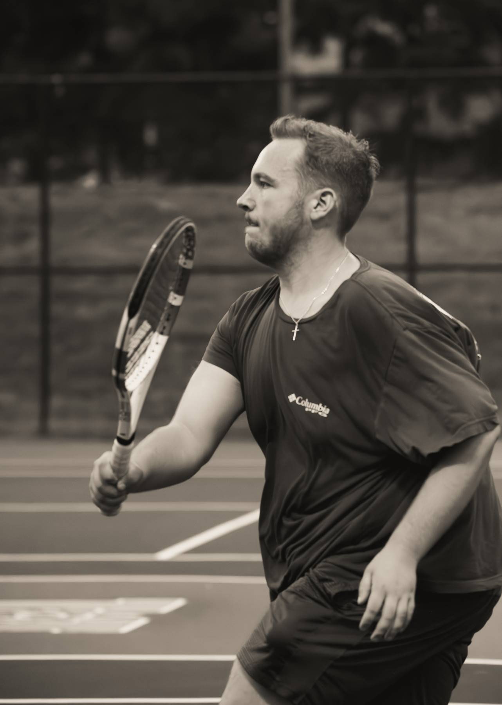
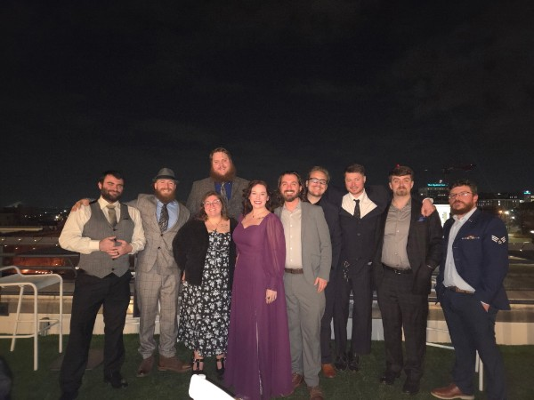

About My Interests
Outside of web development, I enjoy spending my time staying active, relaxing, and being involved in my community. My hobbies help me maintain a good balance between school, personal life, and my goals as I continue learning new skills.
I try to keep a mix of activities in my routine that allow me to stay productive while also giving myself time to unwind. Having a variety of interests helps me stay motivated and focused both in and outside of school.

Sports & Pickleball
One of my favorite activities is playing pickleball and tennis. I enjoy both the competitive and social sides of the games, and it’s a great way for me to stay active. It also helps me build focus, coordination, and consistency.
In addition to pickleball and tennis, I like participating in other sports whenever I have the opportunity. Being active through sports helps me stay disciplined and gives me a break from schoolwork while still staying productive.
Church & Community
Going to church is an important part of my life and something I look forward to each week. It gives me a sense of community and allows me to be around people who share similar values and perspectives.
It also gives me time to reflect and stay grounded, which helps me maintain a positive mindset. Being involved in a community like this is something I value and try to stay consistent with.

Friends & Food
I also enjoy spending time with my friends and trying different types of food. Whether we are hanging out, going out to eat, or just relaxing together, I value the time I get to spend with the people close to me. It’s a great way to take a break from school and stay connected.
I like experiencing different kinds of food and exploring new places to eat when I get the chance. Trying new foods is something I enjoy because it gives me the opportunity to experience different cultures and flavors while spending time with friends.